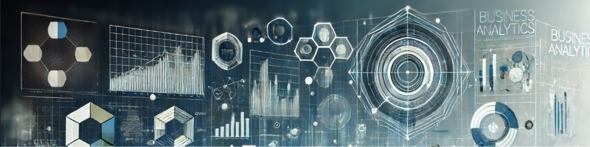
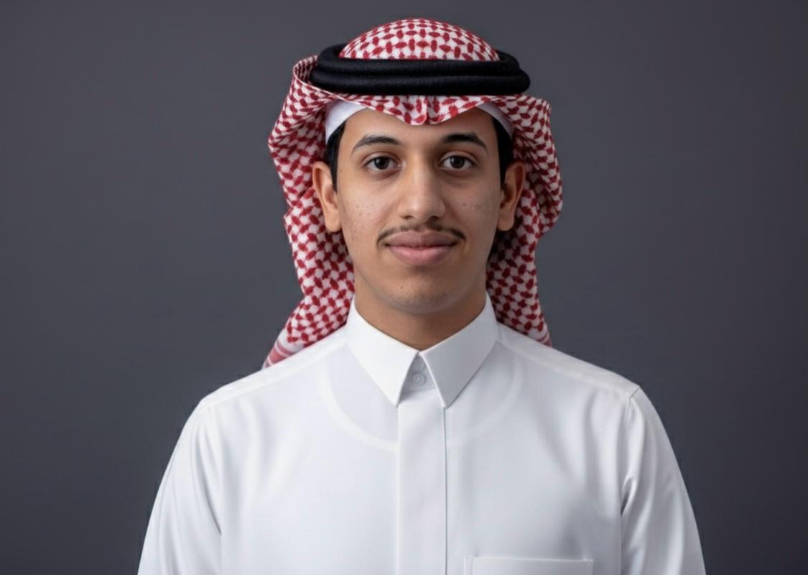
أنس محمد القحطاني
Anas Mohammed Al-Qahtani
محلل تطبيقات
Application Analyst
نبذة عني
About Me
طالب في السنة الأخيرة بتخصص نظم معلومات وتحليل أعمال، أمتلك خبرة عملية في تحليل التطبيقات والبيانات. أركز على تحليل متطلبات الأعمال لتحسين النظم التقنية، وتصميم لوحات قياس الأداء (Dashboards) باستخدام Power BI، والتعامل مع قواعد البيانات عبر SQL. أطمح لتحويل البيانات والاحتياجات المعقدة إلى حلول تقنية عملية تدعم اتخاذ القرار وترفع من كفاءة الأداء المؤسسي.
A senior student majoring in Information Systems & Business Analysis, with practical experience in Application and Data Analysis. I focus on analyzing business requirements to optimize technical systems, designing performance dashboards using Power BI, and managing databases with SQL. I aim to transform complex data and business needs into practical technical solutions that support decision-making and enhance corporate efficiency.
الدراسة الأكاديمية
Academic Education
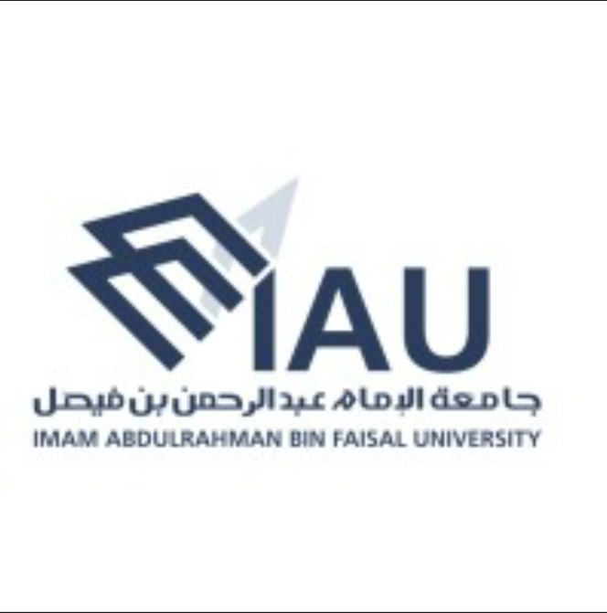
بكالوريوس علوم في نظم المعلومات وتحليل الأعمال
Bachelor of Science in Information Systems & Business Analytics
جامعة الإمام عبدالرحمن بن فيصل | طالب حالي Imam Abdulrahman Bin Faisal University | Current Studentدراسة متعمقة ترتكز على تحليل وتصميم النظم التقنية، وإدارة البيانات، وتوظيف التكنولوجيا لابتكار حلول أعمال فعالة تسهم في التحول الرقمي للمؤسسات. من أبرز المقررات ذات الصلة:
An in-depth study focused on analyzing and designing technical systems, data management, and leveraging technology to create effective business solutions that drive digital transformation. Key relevant courses include:
- إدارة قواعد البيانات (Database Management)
- تحليل مشكلات الأعمال (Business Problem Analysis)
- تطبيقات أعمال الويب (Web Business Applications)
- الأعمال والتحول الرقمي (Business and Digital Transformation)
- البرمجة للتحليلات (Programming for Analytics)
- Database Management
- Business Problem Analysis
- Web Business Applications
- Business and Digital Transformation
- Programming for Analytics
الشهادات الاحترافية
Professional Certifications
معسكر معالجة وعرض البيانات (PowerBI Bootcamp)
PowerBI Bootcamp
منصة نظمي | 2026 Nuzmy | 2026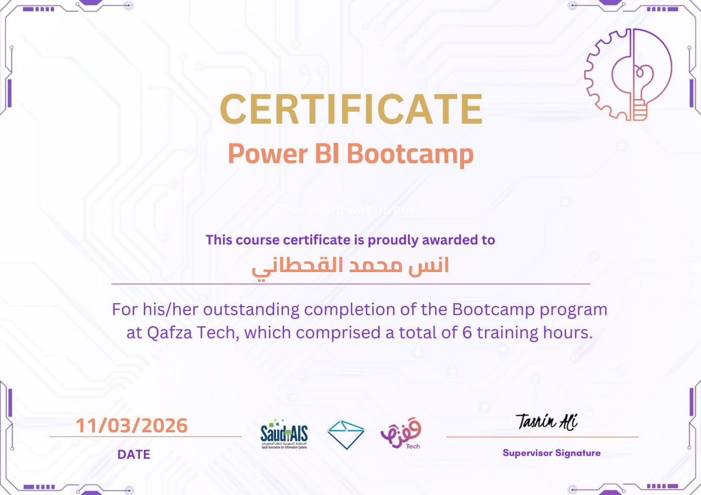
تحليل الأعمال وإدارة العمليات (Business Analysis & Process Management)
Business Analysis & Process Management
شركة IBM | مايو 2025 IBM | May 2025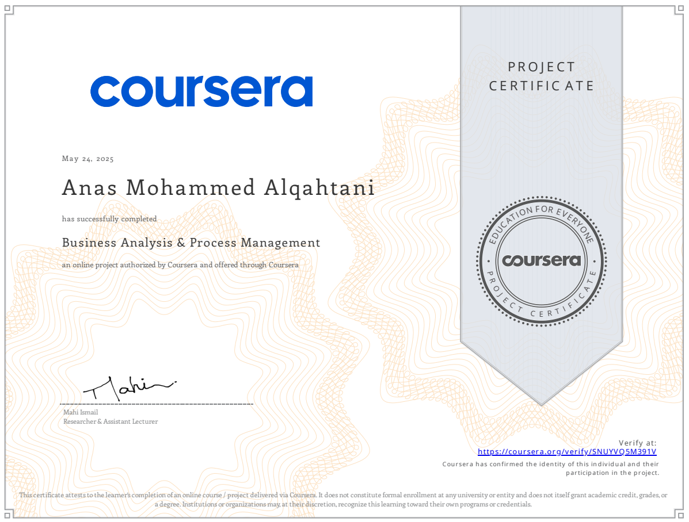
المشاريع الأكاديمية والعملية
Academic & Practical Projects
مشروع التحول الرقمي (Digital Transformation)
Digital Transformation Project
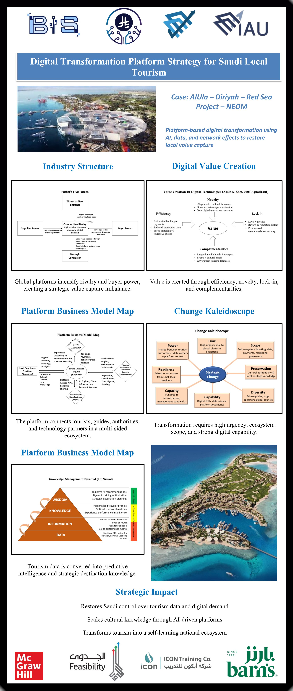
الفكرة والقيمة المضافة: تنفيذ دراسة تشخيصية متعمقة لبيئة عمل تقليدية لتحديد الفجوات الاستراتيجية والتشغيلية، وبناء خارطة طريق شاملة للتحول الرقمي. يرتكز المشروع على إعادة هندسة الإجراءات (BPR) وتبني التقنيات الحديثة لأتمتة العمليات، مما يسهم في خفض التكاليف، رفع كفاءة الأداء، والارتقاء بتجربة العميل (CX) لضمان استدامة الأعمال وتنافسيتها في العصر الرقمي.
Concept & Value: Executed an in-depth diagnostic study of a traditional business environment to identify strategic and operational gaps, formulating a comprehensive digital transformation roadmap. The project centers on Business Process Re-engineering (BPR) and adopting modern technologies to automate workflows, thereby reducing costs, boosting performance efficiency, and elevating Customer Experience (CX) to ensure business sustainability and competitiveness.
مشروع إدارة قواعد البيانات: نظام متجر "NeoMarket"
Database Management Project: "NeoMarket" System
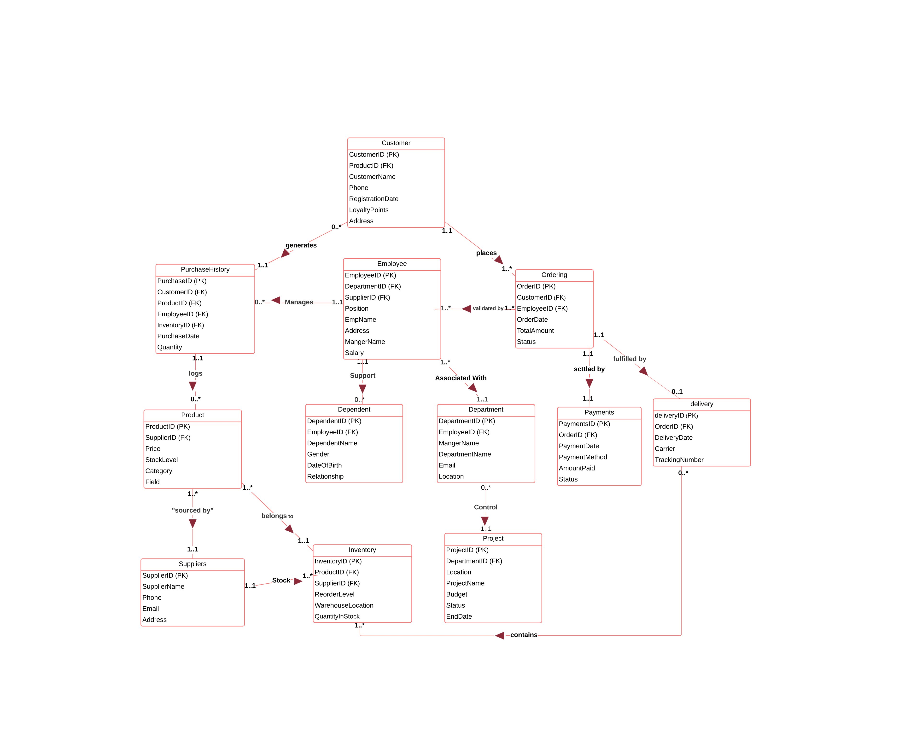


الفكرة والقيمة المضافة: هندسة وتطوير بنية تحتية متكاملة لقواعد البيانات المركزية لمتجر "NeoMarket" بدءاً من جمع وتحليل متطلبات الأعمال، مروراً بتصميم النماذج المنطقية والمادية (ERD)، وصولاً إلى بناء الجداول وهيكلة البيانات باستخدام استعلامات (SQL) المتقدمة. يوفر النظام بيئة بيانات موثوقة تتيح استخراج تقارير تحليلية دقيقة لدعم الإدارة العليا في اتخاذ القرارات المبنية على البيانات (Data-Driven Decisions) وتحسين إدارة المخزون والمبيعات.
Concept & Value: Architected and developed a robust centralized database infrastructure for "NeoMarket," starting from business requirements elicitation to logical and physical data modeling (ERD), and culminating in schema creation using advanced SQL scripting. The system provides a secure data environment that enables the generation of precise analytical reports, empowering executive management with Data-Driven Decision making and optimizing inventory management.
مشروع تحليل مشكلات الأعمال (Business Problem Analysis)
Business Problem Analysis Project
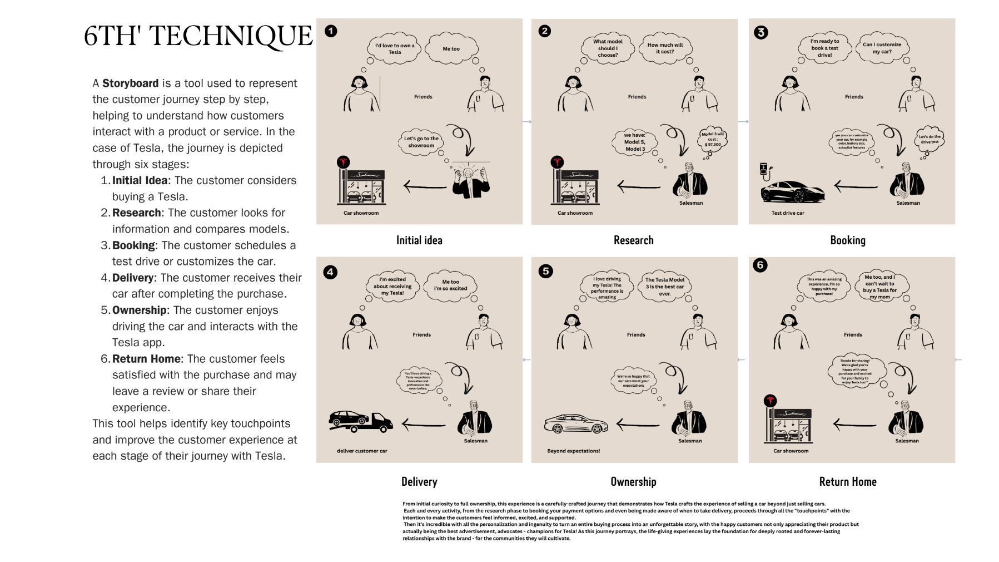
الفكرة والقيمة المضافة: تطبيق منهجيات تحليل الأعمال المتقدمة لتشخيص التحديات المؤسسية عبر النمذجة الدقيقة لسير العمليات في الوضع الحالي (As-Is) والوضع المستقبلي المأمول (To-Be). تضمن المشروع إجراء تحليل الأسباب الجذرية (RCA) لتحديد مكامن الخلل التشغيلي، وتقديم حلول تقنية وإدارية مبتكرة وموثقة لردم الفجوات، بهدف تحسين انسيابية العمل والمواءمة التامة مع الأهداف الاستراتيجية للمنظمة.
Concept & Value: Applied advanced business analysis methodologies to diagnose organizational challenges through rigorous workflow modeling of the current (As-Is) and desired future (To-Be) states. The project involved conducting Root Cause Analysis (RCA) to pinpoint operational bottlenecks and proposing documented, innovative technical and administrative solutions to bridge gaps, aiming to streamline workflows and ensure strict alignment with strategic objectives.
مشروع تطبيقات أعمال الويب (Lavaredoo311 Web App)
Web Business Applications (Lavaredoo311)
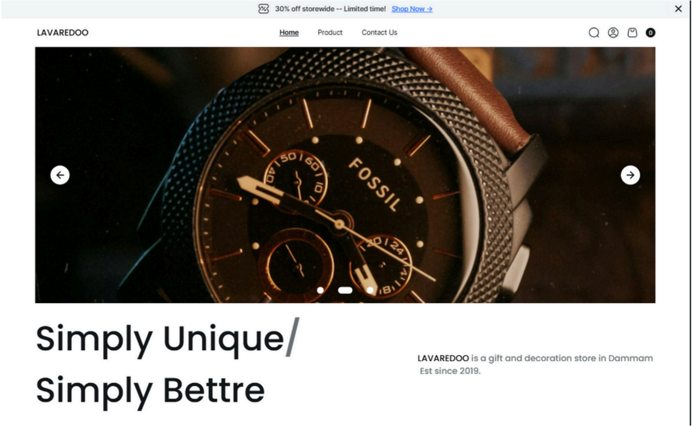
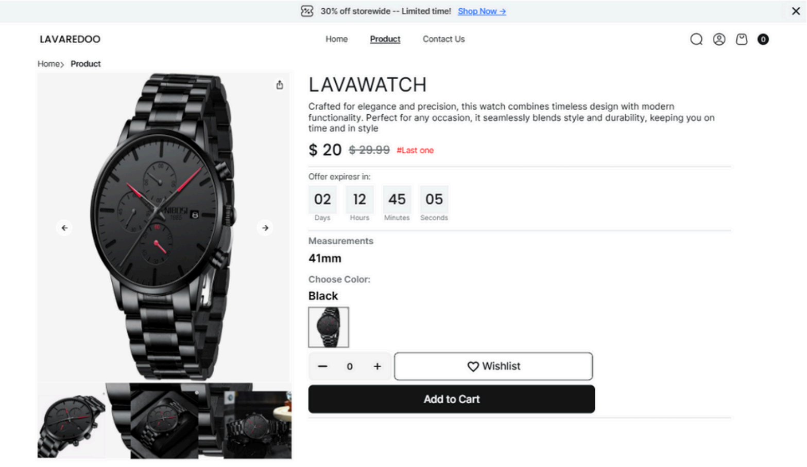
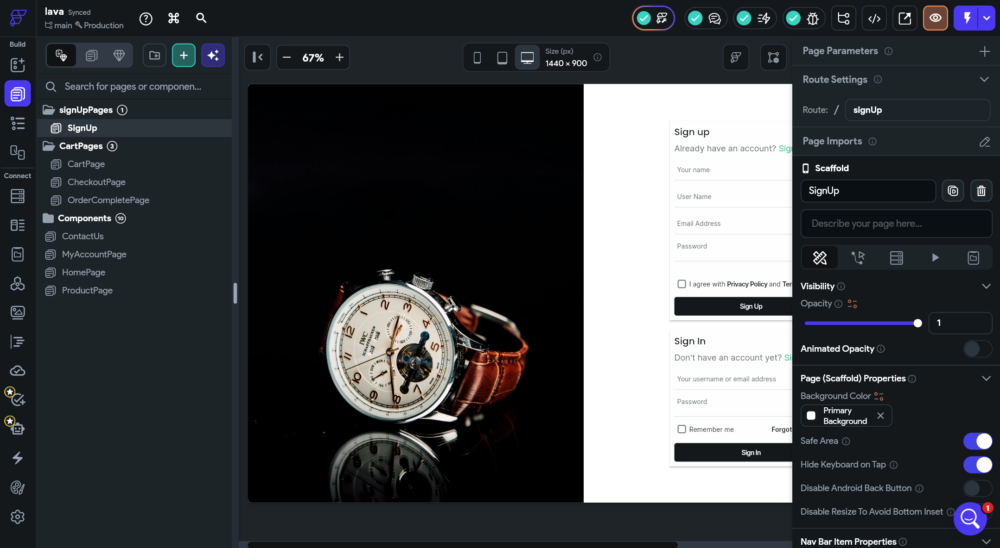
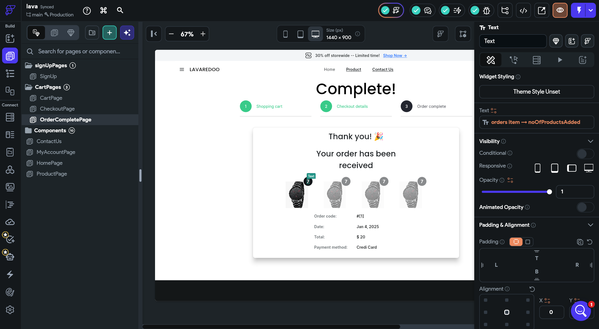
الفكرة والقيمة المضافة: تصميم وتطوير النموذج الأولي لتطبيق الويب "Lavaredoo311" باستخدام منصة التطوير منخفضة التعليمات البرمجية (FlutterFlow). يهدف المشروع إلى تحويل متطلبات الأعمال إلى منتج رقمي وظيفي، حيث تم التركيز على تصميم واجهة وتجربة مستخدم (UI/UX) تفاعلية وسريعة الاستجابة، مع دمج ميزات أساسية مثل مصادقة المستخدمين (Authentication) والتنقل السلس بين الصفحات، مما يعكس القدرة على توظيف أدوات (Low-Code) لبناء حلول رقمية قابلة للتطوير تلبي احتياجات المستخدم النهائي بكفاءة.
Concept & Value: Designed and developed the functional prototype for the "Lavaredoo311" web application utilizing the low-code platform FlutterFlow. The project aimed to transform business requirements into a viable digital product, focusing on crafting a responsive and interactive UI/UX. It incorporated essential features such as User Authentication and seamless page navigation. This demonstrates the capability to leverage low-code tools to build scalable digital solutions that efficiently meet end-user needs.
مشروع نظام إدارة مبيعات التذاكر (Python)
Ticket Sales Management System Project (Python)
1. واجهة تسجيل الدخول وإضافة التذاكر: نظام يتيح تسجيل الدخول الآمن وإضافة تفاصيل التذاكر والعملاء بسلاسة.
1. Authentication & Ticket Entry: A system providing secure login and seamless entry of ticket and customer details.


2. استعراض البيانات والبحث: إمكانية عرض جميع المبيعات والبحث الدقيق عن تذكرة محددة مسبقاً باستخدام رقم التذكرة لضمان سرعة الوصول للمعلومات.
2. Data Retrieval & Search: The capability to view all sales and accurately search for a previously registered ticket using the Ticket ID to ensure quick information access.


3. التقارير والرسوم البيانية: توليد تقارير متقدمة تشمل إجمالي المبيعات لكل فعالية والمبيعات بمرور الوقت، مع تمثيلها بصرياً.
3. Reports & Visualization: Generating advanced reports including total sales per event and sales over time, represented visually.


الفكرة والقيمة المضافة: تطوير نظام إدارة مبيعات التذاكر (TSMS) لتبسيط وتحسين عملية بيع وإدارة تذاكر الفعاليات. يحل النظام محل العمليات اليدوية المعرضة للأخطاء من خلال أتمتة إنشاء التذاكر والمبيعات. يوفر النظام قاعدة بيانات مركزية (CSV) لتخزين بيانات العملاء والمعاملات بأمان، ويتيح البحث عن التذاكر برقم الهوية. تكمن القيمة المضافة في توليد تقارير تلقائية للمبيعات والبيانات المالية وتصويرها بيانياً باستخدام مكتبة (matplotlib) لتمكين منظمي الفعاليات من اتخاذ قرارات مبنية على البيانات.
Concept & Value: Developed a Ticket Sales Management System (TSMS) to simplify and optimize the process of selling and managing event tickets. The system replaces error-prone manual processes by automating ticket creation and sales. It provides a secure, centralized CSV database to store customer information and transactions, allowing users to search tickets by ID. The added value lies in generating automated reports for sales and financial data and visualizing them using matplotlib to empower event organizers in making informed decisions.
- برمجة بايثون، التعامل مع ملفات CSV
- تصوير البيانات (Matplotlib)
- بناء واجهات المستخدم وأنظمة تسجيل الدخول
- إدارة البيانات ومعالجة الأخطاء
- Python Programming, CSV File Handling
- Data Visualization (Matplotlib)
- UI & Authentication Systems
- Data Management & Error Handling
الخبرات العملية والمهنية
Professional Experience
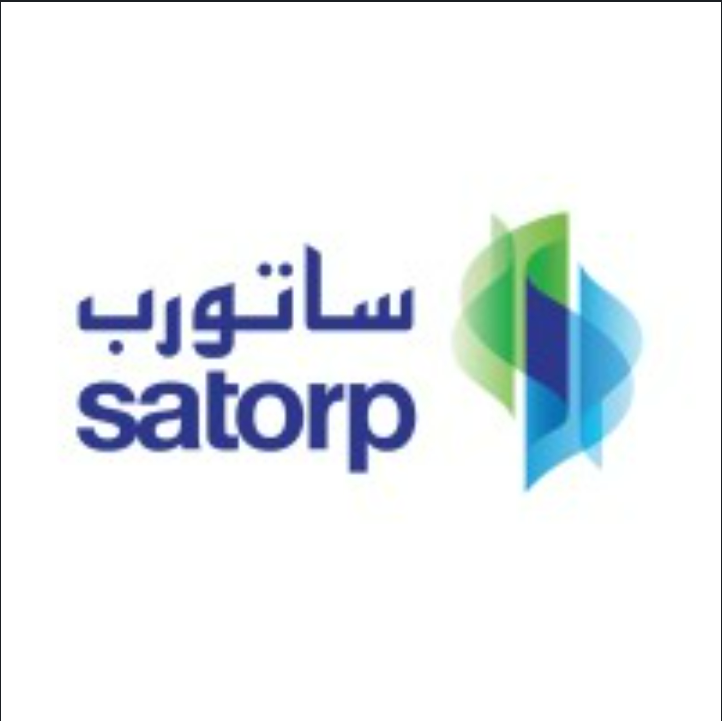
شركة ساتورب (SATORP)
SATORP
المدة الإجمالية: جاري الحساب... Total Duration: Calculating...العمل في بيئة مؤسسية متقدمة لتطبيق مفاهيم تحليل الأعمال والنظم التقنية على مشاريع واقعية. تضمنت مهامي جمع وتوثيق متطلبات الأعمال، التنسيق الفعال مع أصحاب المصلحة (Stakeholders)، والمساهمة في تصميم وتطوير الحلول التقنية باستخدام منهجيات مرنة (Agile) لضمان توافق المشاريع التقنية مع الأهداف الاستراتيجية للشركة.
Working in a leading corporate environment to apply business analysis and technical systems concepts to real-world projects. Responsibilities include gathering and documenting business requirements, coordinating with stakeholders, and contributing to the design and development of technical solutions using Agile methodologies to ensure alignment with strategic corporate objectives.
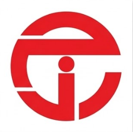
مكتبة جرير
Jarir Bookstore
المدة الإجمالية: جاري الحساب... Total Duration: Calculating...إدارة تجربة العميل (CX) من خلال تقديم استشارات تقنية متخصصة حول المنتجات. تميزت بتحقيق أهداف المبيعات (KPIs) بانتظام عبر تطبيق استراتيجيات البيع المتقاطع (Cross-selling). تضمنت مسؤولياتي أيضاً إدارة المخزون بدقة لضمان توفر المنتجات، وحل مشكلات العملاء باحترافية عالية لضمان رضاهم المستدام.
Managing Customer Experience (CX) by providing specialized technical consultations on products. Consistently achieved sales KPIs by effectively implementing cross-selling strategies. Responsibilities also included meticulous inventory management to ensure product availability, and resolving customer issues with high professionalism to ensure sustained satisfaction.
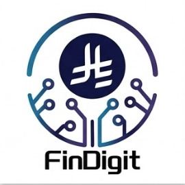
معرض FINDIGITAL التقني
FINDIGITAL Exhibition
المدة الإجمالية: فترة المعرض (ديسمبر 2025) Total Duration: Exhibition Period (Dec 2025)تمثيل أكاديمي وتقني رائد لتخصص نظم المعلومات أمام نخبة من الخبراء وممثلي الشركات التقنية. شملت مشاركتي تقديم عروض توضيحية معمقة للمشاريع التقنية، وبناء شبكة علاقات مهنية استراتيجية (Networking) عكست جودة المخرجات التعليمية وأبرزت الكفاءات الشابة للجامعة في المحافل التقنية.
Provided leading academic and technical representation for the Information Systems major to industry experts and corporate delegates. My role involved delivering in-depth technical presentations of projects and building strategic professional networking, successfully reflecting the quality of academic outputs and showcasing the university's young talent in technical forums.
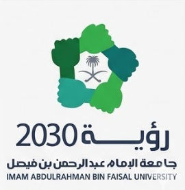
نادي رؤية 2030 الطلابي
Vision 2030 Student Club
المدة الإجمالية: جاري الحساب... Total Duration: Calculating...القيادة الاستراتيجية لفرق العمل المتعددة لابتكار وتنفيذ برامج ومبادرات تدعم مستهدفات رؤية المملكة 2030. تضمنت مهامي الإشراف الشامل على التخطيط التنفيذي، متابعة مؤشرات الأداء، وتوجيه الأعضاء لضمان نجاح الفعاليات بأعلى معايير الجودة التنظيمية.
Strategic leadership of diverse teams to innovate and implement programs and initiatives supporting Saudi Vision 2030 objectives. Responsibilities included comprehensive oversight of executive planning, monitoring performance indicators, and guiding members to ensure the success of events adhering to the highest standards of organizational quality.
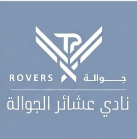
نادي عشائر الجوالة
Rover Scout Club
المدة الإجمالية: جاري الحساب... Total Duration: Calculating...تطوير وتنفيذ خطط تواصل استراتيجية لتعزيز الصورة الذهنية للنادي. توليت إدارة العلاقات وبناء الشراكات مع الجهات الداخلية والخارجية، بالإضافة إلى الإشراف على التغطيات الإعلامية وتصميم البرامج المجتمعية التي تخدم أهداف وقيم الجامعة.
Developed and implemented strategic communication plans to enhance the club's brand image. Managed relations and built partnerships with internal and external entities, alongside overseeing media coverage and designing community programs that serve the university's goals and values.
المشاركات التنظيمية والمجتمعية
Community & Organizational Participations
تمثيل الجامعة في معرض TEDx بالرياض
Representing the University at TEDx Riyadh
11 مايو 2023 May 11, 2023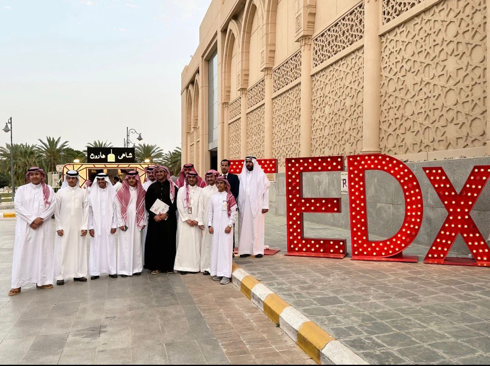
المشاركة في مهمة تنظيم الحج
Participating in the Hajj Organization Mission
يونيو 2024 June 2024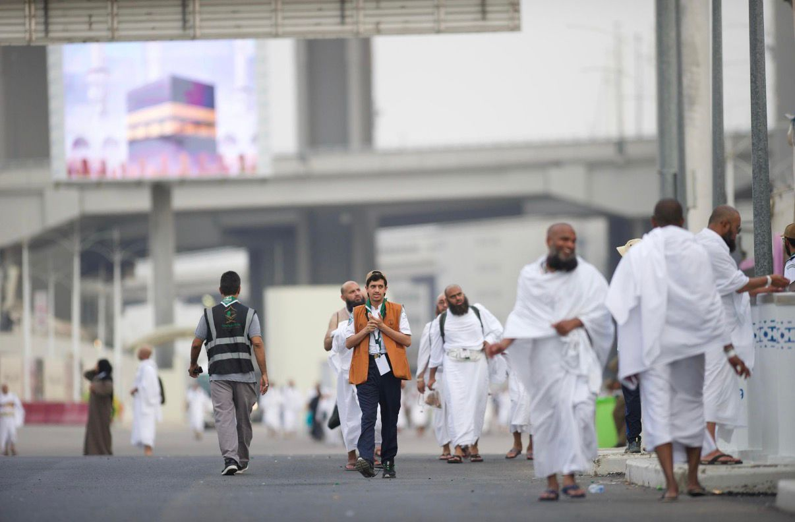
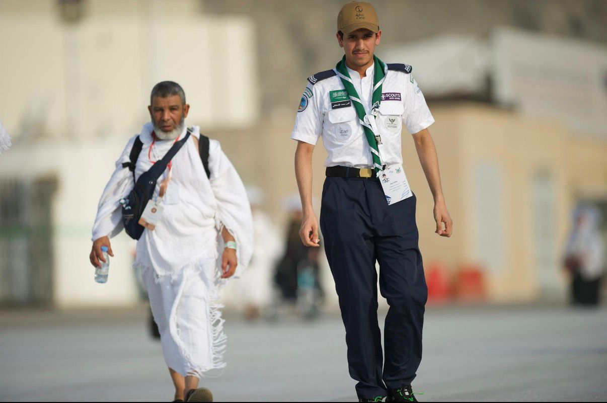
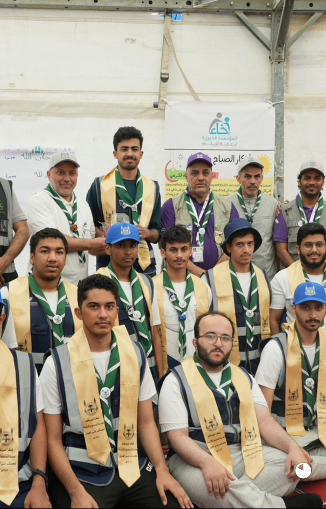
تنظيم حفل تخرج طلاب جامعة الإمام عبدالرحمن بن فيصل
Organizing IAU Students Graduation Ceremony
العام الجامعي 2024 - 2025 Academic Year 2024 - 2025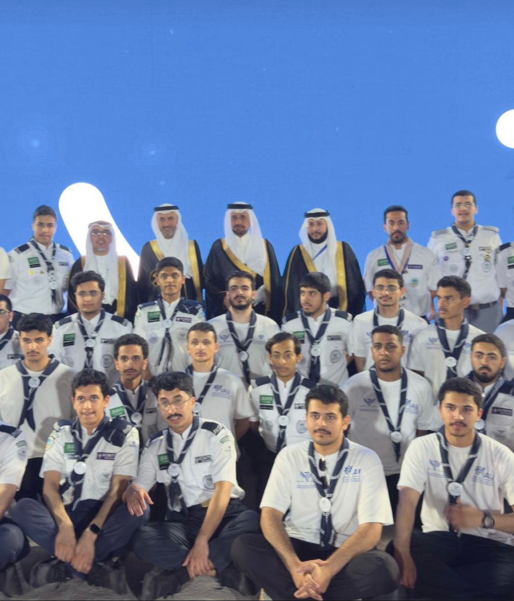
المشاركة في معرض الكليات الصحية (بصفتي رئيس نادي رؤية 2030)
Health Colleges Exhibition (As President of Vision 2030 Club)
خلال فترة رئاسة النادي During Club Presidencyنبذة عن المشاركة: تمحورت مشاركتنا في المعرض حول إبراز دور التطور ورؤية المملكة في القطاع الصحي، حيث شملت النقاشات المحاور التالية:
Participation Overview: Our involvement in the exhibition focused on highlighting the role of development and the Kingdom's vision in the health sector, with discussions covering:
- تطوير البنية التحتية الصحية وجعلها مرافق صحية ذكية.
- تعزيز الرعاية الصحية الشاملة.
- تعزيز التعليم الطبي.
- Developing health infrastructure and making them smart health facilities.
- Promoting comprehensive healthcare.
- Promoting medical education.
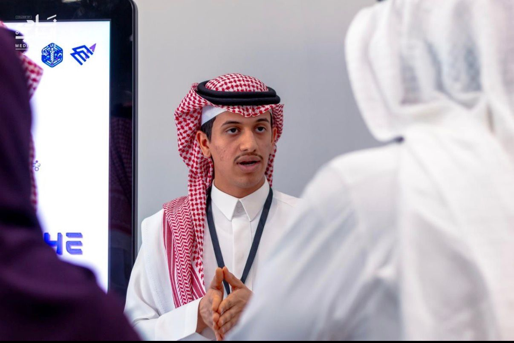
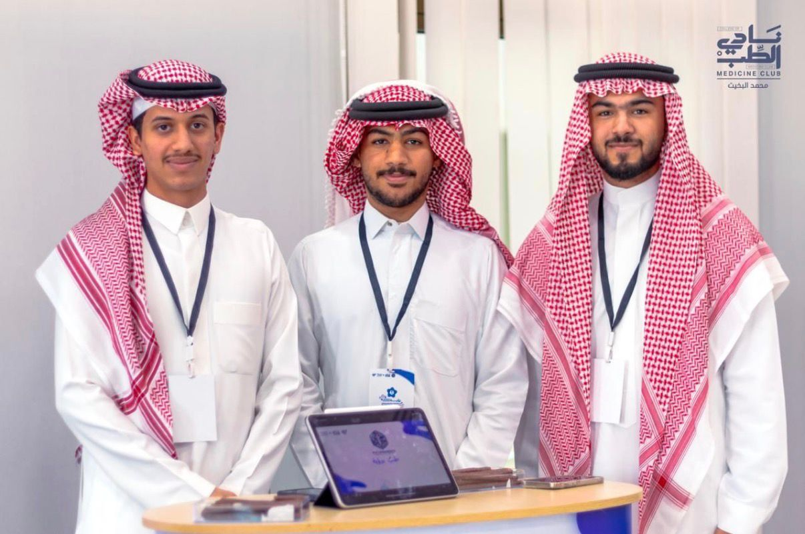